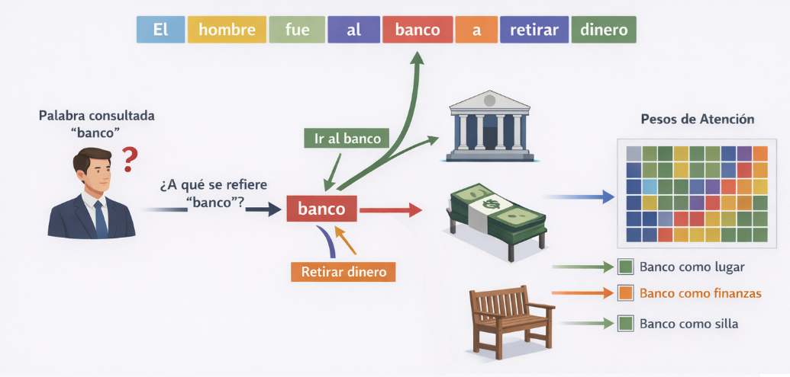
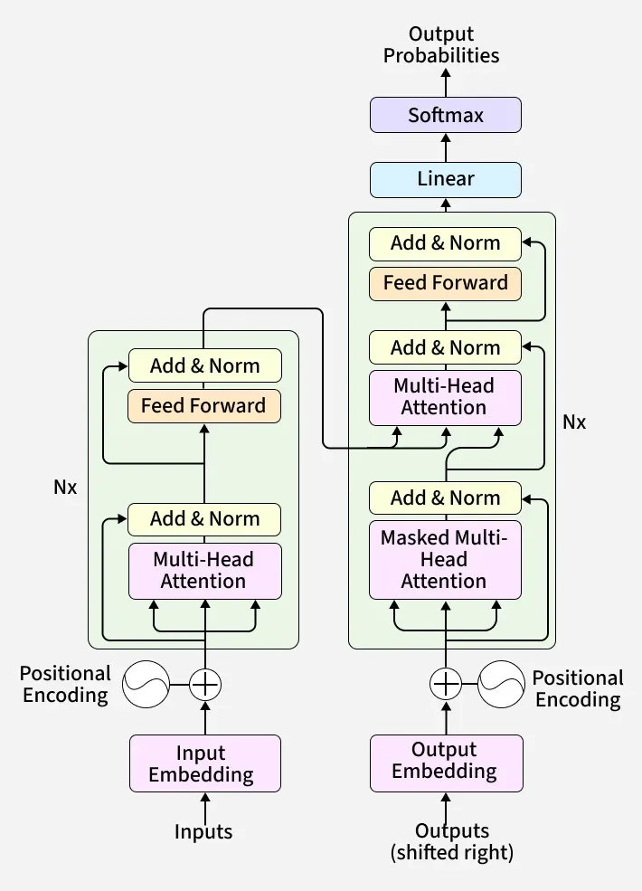
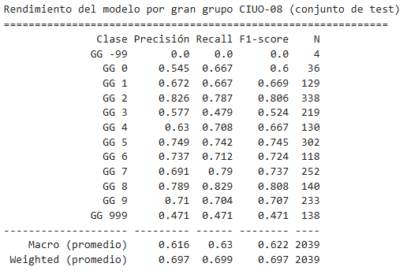

El objetivo de esta clase es entender cómo funcionan los Transformers y cómo usarlos a través de fine-tuning para resolver problemas reales de procesamiento y análisis estadístico.
El problema que los transformers vinieron a resolver: Límites de las RNN y LSTM, y la aparición del Transformer.
Mecanismo de atención: La idea central de la arquitectura
Pre-entrenamiento y fine-tuning: La lógica del transfer learning
Modelos para español: BETO y la familia RoBERTa
Ejercicio práctico: Fine-tuning de BETO con HuggingFace
El problema que los transformers vinieron a resolver
Límites de las RNN y LSTM
Problema: el significado de una palabra depende de su contexto.
“Trabajo en una empresa que realiza minería de …”
En qué sector económico trabajo? La respuesta depende del contexto.
Minería de datos -> Actividades profesionales, científicas y técnicas
Minería de cobre -> Explotación de minas y canteras
Hasta 2017, el estado del arte para solucionar este problema eran las Redes Neuronales Recurrentes (RNN), Long Short-Term Memory (LSTM), Gated Recurent Units (GRU), entre otras.
Pero tienen problemas:
La información se diluye a medida que la secuencia crece (Las LSTM mitigan el problema, pero no lo eliminan)
Recurrencia hace difícil la paralelización, por lo que el costo computacional escala mal.
La solución: Transformers y la Autoatención
En vez de leer de izquierda a derecha y acumular un estado latente, los Transformers miran todas las parte del texto para entender qué dice un texto, pero poniéndole más o menos atención a algunas partes.
Esa es la idea del mecanismo de Atención (o Autoatención): en vez de comprimir todo en un estado oculto, el modelo aprende a ponderar cuánto importa cada token para producir la representación actual.
¿Por qué son tan bacanes los Transformers?
Paralelización masiva: Los transformers procesan todos los tokens simultáneamente, lo que significa que puedes aprovechar las GPUs al máximo. Es lo que hizo posible entrenar modelos con billones de parámetros.
Preentrenamiento: Se pueden preentrenar en texto no supervisado (predicción de siguiente token o tokens enmascarados) y luego afinar para tareas específicas. Esta idea de “preentrenar una vez, usar muchas veces” escaló de manera predecible: cuantos más datos y parámetros, mejor el modelo.
Capacidades emergentes: Arquitectura suficientemente flexible que permite la aparición de capacidades emergentes, como el razonar en múltiples pasos, hacer aritmética simple o aprender de pocos ejemplos en el contexto.
El mecanismo de atención
Intuición
Para representar la palabra banco, el modelo mira las demás palabras y le pone atención a las que son más “relevantes”. En función de eso, actualiza su valor (y así con todas los tokens del texto).

Intuición
:::: columns
La atención es una parte de los Transformers. Es un mecanismo de búsqueda aprendible (entrenable).
Los transformers aprenden a qué y cómo poner atención para “entender” los tokens de un texto.
Esto permite actualizar la representación de cada token de un texto en función de cuánta atención se le pone a las diferentes partes del mismo texto.

Queries, Keys y Values
La atención se implementa con tres matrices aprendibles. Para cada token en la secuencia:
Query (Q): “¿Qué información necesito?” — lo que estoy buscando.
Key (K): “¿Qué información tengo yo?” — lo que cada token ofrece.
Value (V): “¿Qué información entrego si me eligen?” — el contenido que se pasa.
Queries, Keys y Values
La atención se implementa con tres matrices aprendibles. Para cada token en la secuencia:
Query (Q): “¿Qué información me haría cambiar la forma en que entiendo un token?”
Key (K): “¿Qué información es relevante para el significado de otros tokens?”
Value (V): “¿Qué información traspaso a otros tokens, si es que me”eligen”?“
La atención entre Q y K produce un peso para cada par de tokens. Esos pesos se aplican sobre V:
El Transformer original (2017) se diseñó para traducción automática, por lo que tenía dos mitades: Encoder y Decoder. La lógica era que el Encoder “codificaba” la información de un idioma en un vector numérico, y el Decoder tomaba esto y lo “decodificaba” en otro idioma.
Con el tiempo se encontró que cada mitad es útil por separado, y para propósitos diferentes.
Estructura Encoder-Decoder
Encoder - leer y representar
Toma una secuencia de tokens y produce una representación para cada uno
Atención bidireccional: cada token ve todos los demás (izquierda y derecha)
No genera nada: su salida son vectores, no palabras
Útil cuando la tarea requiere entender el texto de entrada
Decoder - generar secuencias
Toma una secuencia de tokens y produce una predicción del siguiente token
Atención causal: cada token solo ve los anteriores, nunca los siguientes
Esta restricción es necesaria para que la generación sea coherente: no puede “hacer trampa” mirando el futuro
Útil cuando la tarea requiere producir texto nuevo
Modelos actuales (Claude, GPT-4, etc.)
Claude, GPT-4, Gemini y todos los grandes modelos de lenguaje actuales son, en su núcleo, transformers decoder-only.
Entrenados con predicción de siguiente token sobre cantidades enormes de texto, seguido de refinamiento con retroalimentación humana (RLHF o variantes).
BERT: el encoder por excelencia
BERT (Bidirectional Encoder Representations from Transformers, Google 2018) fue el modelo que democratizó el uso de Transformers en NLP:
12 capas Transformer, 110M de parámetros (versión base).
Pre-entrenado en Wikipedia + BooksCorpus en inglés.
Bidireccional: cada token ve todo el contexto (izquierda y derecha).
Tarea de pre-entrenamiento: Masked Language Modeling (MLM) y Next Sentence Prediction.
Con BERT, por primera vez fue posible tomar un modelo ya entrenado y adaptarlo a tareas específicas con muy pocos datos propios: el fine-tuning.
Pre-entrenamiento y fine-tuning
Fine-tuning
Cuando queremos realizar una tarea con modelos de IA, no necesitamos entrenar desde cero. Podemos partir de un modelo que ya “entiende” el español y le enseñamos nuestra tarea específica, por lo que se necesitan mucho menos datos de entrenamiento.
El fine-tuning (o ajuste fino) es una técnica de inteligencia artificial donde un modelo previamente entrenado recibe entrenamiento adicional con un conjunto de datos más pequeño y específico. Esto permite adaptar sus conocimientos generales para que realice tareas específicas.
¿Qué ocurre durante el fine-tuning?
Tomamos el modelo pre-entrenado (BERT, BETO…).
Agregamos una cabeza de clasificación: una capa lineal sobre el token [CLS].
Entrenamos con nuestros datos etiquetados, ajustando todos los pesos (o solo parte de ellos).
Usamos un learning rate muy pequeño para no “olvidar” lo pre-entrenado.
Note
El token [CLS] es un token especial que BERT agrega al inicio de cada texto. Su representación final captura el significado global de la oración y se usa como input para la capa de clasificación.
Modelos para español
El problema del idioma
BERT fue pre-entrenado en inglés. Usarlo directamente para texto en español tiene limitaciones:
El vocabulario (tokenizador) fue construido para inglés.
Palabras en español se fragmentan en muchos tokens: “electricista” → ["el", "##ect", "##ric", "##ista"].
El modelo “entiende” menos del español que del inglés.
La solución: modelos pre-entrenados directamente en español.
BETO: BERT para español
BETO es la versión de BERT entrenada por el Departamento de Ciencias de la Computación de la Universidad de Chile:
Pre-entrenado en el Spanish Wikipedia (más de 3 GB de texto).
Mismo vocabulario y arquitectura que BERT-base (30.000 tokens en español).
Publicado en HuggingFace como dccuchile/bert-base-spanish-wwm-cased.
Otros modelos relevantes
Modelo
Base
Entrenado en
HuggingFace
BETO
BERT
Wikipedia ES
dccuchile/bert-base-spanish-wwm-cased
RoBERTa-es
RoBERTa
0.9 TB texto español
PlanTL-GOB-ES/roberta-base-bne
mBERT
BERT
Wikipedia 104 idiomas
bert-base-multilingual-cased
XLM-RoBERTa
RoBERTa
100 idiomas
xlm-roberta-base
¿Cuál elegir? Para glosas de ocupación y actividad económica en Chile:
BETO es una excelente línea base, fácil de usar y bien documentada.
RoBERTa-es (BNE) suele superar a BETO en benchmarks; entrenado con corpus más diverso.
XLM-RoBERTa útil si el corpus tiene mezcla de idiomas o dialectos.
Ejercicio práctico
El problema de la codificación
En el Censo 2024, las preguntas de ocupación y rama de actividad se capturan como texto libre:
“¿Cuál es su ocupación principal?” → “Técnico electricista”
“¿Qué tareas y deberes cumple en su trabajo?” → “Instalar sistemas eléctricos”
“¿A qué se dedica la empresa en la cual trabaja?” → “Construcción de edificios”
Estas respuestas deben codificarse según clasificadores internacionales:
CIUO-08: Clasificación Internacional Uniforme de Ocupaciones (OIT)
CAENES: Clasificación de Actividades Económicas para Encuestas Sociodemográficas (INE)
La codificación manual es costosa y propensa a inconsistencias entre codificadores. Un modelo de fine-tuning puede automatizar el proceso y mejorar la consistencia.
Codificación de ocupaciones (CIUO-08)
Entrada: texto libre de la glosa de ocupación, y de tareas y deberes.
Salida: código CIUO-08 a 1 dígito (10 grandes grupos).
Código
Grupo
1
Directores y gerentes
2
Profesionales científicos e intelectuales
3
Técnicos y profesionales de nivel medio
4
Personal de apoyo administrativo
…
…
9
Ocupaciones elementales
Note
Ejericio práctico con 1 dígito (10 clases) como primer paso. El modelo puede refinarse luego para 2, 3 y 4 dígitos, donde el problema se vuelve más difícil.
Pipeline completo con HuggingFace
HuggingFace transformers permite hacer fine-tuning de BETO en pocas líneas. El pipeline completo tiene cinco etapas:
Carga y preparación de datos
Codificación de etiquetas y split train/test
Tokenización
Configurar el Trainer y entrenar
Evaluación e inferencia
Usaremos un dataset de glosas auditadas por el equipo de Nomenclaturas, proveniente de distintas encuestas o Censos realizados por el INE, con etiquetas CIUO-08 a 1 dígito.
Paso 1: carga de datos
import pandas as pdimport numpy as npfrom sklearn.model_selection import train_test_splitfrom sklearn.preprocessing import LabelEncoderfrom sklearn.metrics import classification_report, accuracy_score, f1_scoredf = pd.read_csv("codigos_ciuo_auditorias_nomenclaturas.csv")df = df[["texto", "codigo_ciuo_1d"]].dropna().reset_index(drop=True) # <1>print(f"Total de registros: {len(df):,}")print(df["codigo_ciuo_1d"].value_counts().sort_index())
texto es la concatenación de ocupación y tareas. Usar ambos campos mejora la clasificación porque el modelo dispone de más contexto que solo el nombre del cargo.
PyTorch necesita enteros contiguos desde 0. LabelEncoder hace ese mapeo automáticamente: si en los datos solo aparecen los grupos 1, 2, 3 y 5, los convierte a 0, 1, 2, 3. El objeto le guarda el mapeo inverso para recuperar los códigos CIUO originales al final.
stratify garantiza que la proporción de cada grupo CIUO sea la misma en train y test, lo que es importante cuando hay clases con pocos ejemplos.
Al cargar el modelo verán avisos sobre pesos no utilizados (los de MLM) y pesos faltantes (la cabeza de clasificación). Ambos son normales.
F1 macro pondera cada clase por igual, independiente de su tamaño. Es más informativo que la accuracy cuando las clases están desbalanceadas.
Learning rate entre 2e-5 y 5e-5 es estándar para fine-tuning de BERT.
Paso 5: evaluación detallada
from sklearn.metrics import classification_reportsalida = trainer.predict(ds_test)preds = np.argmax(salida.predictions, axis=-1)etiquetas_reales = np.array(ds_test["label"])nombres_clases = [f"GG {c}"for c in le.classes_] # <1>reporte = classification_report( etiquetas_reales, preds, target_names=nombres_clases, zero_division=0)print(reporte)
le.classes_ contiene los códigos CIUO originales en el orden en que LabelEncoder los asignó. Así cada fila del reporte muestra el gran grupo CIUO real, no un índice interno.
Note
El reporte muestra precisión, recall y F1 por cada gran grupo CIUO. Es la métrica más útil para detectar qué grupos son difíciles de clasificar (p/e Grupo 5 Servicios vs. Grupo 9 Ocupaciones elementales suelen confundirse).
Paso 6: inferencia con decodificación real
from transformers import pipelineDIRECTORIO_FINAL ="./modelo_ciuo08/final"trainer.save_model(DIRECTORIO_FINAL)tokenizer.save_pretrained(DIRECTORIO_FINAL)clasificador = pipeline("text-classification", model=DIRECTORIO_FINAL, tokenizer=DIRECTORIO_FINAL, device=-1)def predecir_ciuo(texto): resultado = clasificador(texto, truncation=True, max_length=64)[0] idx =int(resultado["label"].split("_")[1]) # <1> codigo = le.classes_[idx]return {"codigo_ciuo_1d": int(codigo), "confianza": round(resultado["score"], 4)}glosas = ["OCUPACIÓN: ENFERMERA; TAREA: ADMINISTRAR MEDICAMENTOS Y CONTROLAR SIGNOS VITALES","OCUPACIÓN: CONDUCTOR DE CAMIÓN; TAREA: TRANSPORTAR CARGA ENTRE REGIONES","OCUPACIÓN: TEMPORERO AGRÍCOLA; TAREA: COSECHAR UVA EN TEMPORADA",]for glosa in glosas: r = predecir_ciuo(glosa)print(f"GG {r['codigo_ciuo_1d']} ({r['confianza']:.1%}) → {glosa[:65]}")
pipeline devuelve "LABEL_0", "LABEL_1", etc. — índices internos, no códigos CIUO. le.classes_[idx] recupera el código CIUO original a partir de ese índice.
Resultados
Con el dataset de auditorías de Nomenclaturas (~10.000 glosas):

Cierre
Qué vimos hoy
El problema de las RNN: pérdida de memoria en secuencias largas, dificultad para paralelizar.
Mecanismo de atención: Q, K, V — cada token puede mirar directamente cualquier otro.
Arquitectura Transformer: bloques de Multi-Head Attention + Feed-Forward + residuales.
Encoder vs. Decoder: para clasificación censal, usamos encoders (BERT/BETO).
Pre-entrenamiento + fine-tuning: aprovechamos conocimiento general para adaptarlo a CIUO/CAENES.
BETO y el ecosistema HuggingFace: pipeline completo en Python.
Aplicaciones en CPV2024: codificación automática de ocupaciones (CIUO-08) y rama de actividad (CAENES).